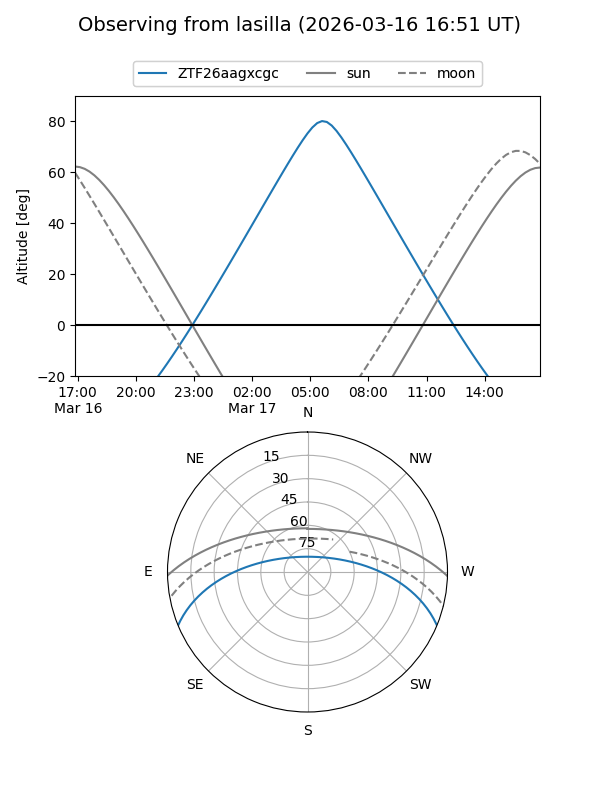
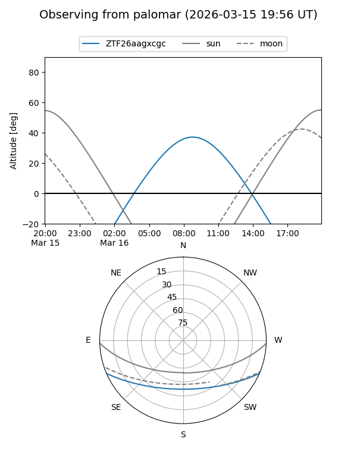

ZTF26aagxcgc
Target ZTF26aagxcgc at 2026-03-16 09:26
Aliases and brokers:
FINK: link
Lasair: link
ALeRCE: link
alt names
ZTF26aagxcgc (ztf,fink_ztf)
Coordinates:
equatorial (ra, dec) = 188.5504,-19.28480
equatorial (HMS+DMS) = 12:34:12.09,-19:17:05.28
galactic (l, b) = (297.3304,+43.39940)
Flags:
Photometry:
last ztfg=16.50
1 ztfg detections
Lightcurve
Visibility


Additional plots